MERLIN：用键的一阶与二阶矩改进多状态线性注意力路由
Hee Seung Hwang、Sanghyuk Chun、Xindi Wu、Olga Russakovsky 与 Zhiwei Deng 提出 Multi-State Linear Attention with Generalized Second-Order Routing，方法名为 MERLIN。第一作者主机构为普林斯顿大学，合作作者来自 Google DeepMind；论文致谢说明实验、数据收集与处理均在普林斯顿完成，未使用 Google DeepMind 算力。本文于 2026 年 10 月 27 日首次公开，本笔记于 2026 年 10 月 29 日核验原文：论文入口。本轮未核验到本文独立代码或项目入口，引用的骨干模型仓库不视为本文代码发布。
多状态线性注意力将上下文分段压缩，却通常只根据查询与每段键的平均对齐来聚合记忆，忽略段内对齐的分布。少数高度相关的键可能被平均值稀释，因此判断一个段是否值得读取，还需要保留对齐方差所提供的信息。
1. 背景和问题
长上下文模型同时面对两类困难：把历史存下来，以及在当前查询出现时找对历史。标准自注意力把每个位置的键和值保存为缓存，再让查询逐个比较，因此保留的信息粒度细，但上下文越长，预填充中的两两交互和解码缓存成本越高。线性注意力改变了这一存储方式：它把键和值的外积累积成一个固定大小的状态，后续查询直接乘这个状态得到输出。这里节约的是逐位置存储和逐位置匹配，却把大量内容混入同一矩阵；当输入变长，原来应当区分的关联可能互相干扰，某些稀有事实也可能在压缩过程中丢失。
Gated DeltaNet 等架构并非最简单的累加器。它们通过遗忘、写入强度和增量纠正机制，控制旧状态如何影响新状态。这能改善固定容量记忆，但没有取消容量本身的限制。把一整篇长文、多个检索段落或长期交互记录持续写入同一状态，最终仍需要用有限的矩阵表达不断增加的信息。本文因此接续多状态线性注意力这一方向：把上下文切成若干连续段，每段维护自己的状态。完成一段后保留它的压缩结果，而非让后续内容继续覆盖它，查询时可以读取多个状态，再将这些读出合并。
多状态设计把一个问题拆成了两步。第一步是分段，决定哪些 token 共用同一个状态，可以按固定长度，也可以按内容变化或层级结构来组织。第二步是聚合，决定当前查询应当相信哪些段的输出，以及相信多少。已有研究对分段投入较多关注，而本文把聚合作为独立瓶颈。即使每个段的压缩内容已经足够好，如果最后给错误的段分配较大权重，答案仍然可能出错；反之，改善路由也可能在不继续增加状态数量的情况下，利用好已有的记忆容量。MERLIN 的贡献边界因此相当清楚：它主要改善聚合权重的形成方式，实验中保持等长分段，未提出新的动态分段器。
一种直接的聚合方法从当前隐藏状态或查询投影出位置权重。它能学到近期内容较重要等模式，却没有看每个段真正存了什么。假设正确证据位于长文中段，只依赖位置的权重容易偏向靠后的状态。另一种方法先对每段的键求平均，然后衡量当前查询与这个平均键的匹配程度。后者已经具有内容意识，但平均值只反映总体方向，无法区分“整个段都与查询略微有关”和“绝大多数内容无关、少量位置极度相关”。这两种段可能有接近的平均对齐，却对问答具有完全不同的价值。
理解这个缺口时，应把注意力分数看成一组随段内 token 改变的标量。某个段内所有键的对齐都不高，其均值可能与另一个段相近；另一个段却可能出现一个特别高的对齐，剩余位置则很低。若问题要求查找姓名、数值或具体事实，后一种段更可能包含决定答案的局部证据。单独保留均值会把这种峰值和其他位置平均掉。对齐方差描述这组标量的离散程度，因此给路由提供了均值之外的线索。当然，大方差也可能来自无关异常值，不能直接被解释为有答案；本文采用可训练的混合权重，让模型学习何时依赖均值、何时增加方差分支的贡献。
逐个保存原始键当然也能计算方差，但这样会重新引入逐 token 缓存。MERLIN 的关键观察是，查询尚未到来时，可以先保存段内键的一阶矩与二阶原始矩；等查询到来后，只用向量和矩阵运算就能恢复查询方向上的对齐均值与方差。统计量的维度由路由投影宽度决定，不随单个段的长度增加。这保留了压缩记忆的基本形式，同时为每个状态增加一个概括内部结构的索引。这里的二阶矩不是直接存好所有可能查询的方差，而是存一个可被不同查询读取的方向性统计表示。
这项研究与检索增强生成尤其相关。RAG 中多个段落可能主题接近，但只有其中一处包含所需事实，平均语义可能无法把它突出出来。本文在 HELMET 的少量样本上直接观察正确段得到的路由权重，并通过移动正确段的位置检查位置偏差。它与推荐系统也有概念联系：用户行为摘要中少数异常但高相关的历史行为可能被平均池化掩盖。不过，本文没有进行推荐实验；要迁移到长行为序列，需要重新确认键空间、段划分和任务监督，不能把语言模型的检索增益直接等同于 CTR 或召回收益。
还应提前明确一个容易混淆的资源边界。每段的统计量是固定大小，不等于整条上下文的缓存固定。分段数随长度增加，多状态模型必须保留更多段状态，还要对可见段进行聚合。本文不是把完整注意力无损改写成严格线性复杂度，也不是在单状态模型的常数缓存下免费提高质量。研究问题更接近“在已经接受多状态缓存的前提下，增加少量统计量能否比粗糙聚合更有效”，质量与内存的比较需要始终围绕相同骨干、相同上下文、相同段数或相近缓存预算来理解。
评估这种聚合方法还需要区分路由失败与状态失败。如果正确事实从未被段状态保存下来，再准确的段权重也不能凭空恢复它；若事实已经保存，但多个无关段的读出占据输出，改进聚合才有直接作用。本文没有单独测量所有状态的可恢复信息上限，因此主结果中的进步不能被解释为已经定位并修复了全部记忆损失。作者选择两个内部递推不同的骨干，能初步说明该问题不只依赖某一种写入规则，但共同使用的中训数据和固定分段仍限制了结论范围。对方法阅读而言，应把新增统计量看作段级索引，而不是第二份完整内容记忆；这能避免在讨论缓存开销和精度时将两个职责混为一谈。
2. 方法
2.1 键的一阶矩与二阶矩
先用原文背景中的 Gated DeltaNet 递推明确承载内容的状态与路由统计的区别：
符号解释：$S_t$ 是处理位置 $t$ 后的记忆状态，$k_t$ 与 $v_t$ 是该位置的键和值，$I$ 是单位矩阵，$\alpha_t$ 控制状态衰减，$\beta_t$ 控制纠正和写入强度。这个递推决定内容怎样被压缩进状态，MERLIN 并没有把它替换为二阶矩；状态负责产生值的读出，额外统计量负责判断读出应获得多少权重。Mamba-2 实例使用自己的状态空间递推，聚合模块则共享同一种设计。
符号解释：$C_i$ 为第 $i$ 个连续上下文段，$j$ 是段内位置，$S_{C_i}$ 为该段状态，$q_t$ 为当前查询，$o_{t,i}$ 为读取第 $i$ 段得到的向量，$\ell$ 为当前位置可见的段数，$\lambda_{t,i}$ 为聚合权重，$o_t$ 为最终输出。第一式是普通线性递推的分段示意，具体骨干仍沿用其自身写入规则。将段数增加到多个，只解决信息分别存放的问题；最后一个加权和才是本文希望改善的路由环节。
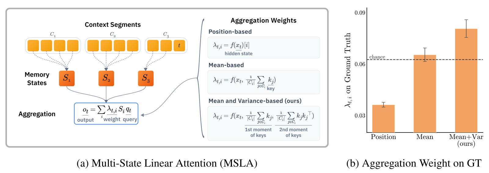
Figure 1 左侧画出上下文段、各自状态和最终聚合，右侧比较三种路由输入。位置路由仅从当前表示产生权重；均值路由额外读取每段平均键；本文再加入键的二阶统计。这里的箭头不是把原始全文重新送入完整注意力，而是在段状态已经形成之后，决定这些压缩读出的贡献。右边的小柱图给出正确证据段收到的权重，均值加方差的组合高于仅用位置或均值的方式，也高于图中随机分配的参考水平。这说明新统计量可能帮助定位相关段，但该诊断只使用三十个随机选择的 HELMET TriviaQA 样本、四千上下文，主要承担动机验证，不能替代后续完整检索评测。柱子的高度是聚合权重，不是任务准确率；误差线也不能被读作所有基准的训练不确定性。左图中三类权重的区别有助于理解后面的主结果：MERLIN 未必让每个状态压缩得更精细，而是让已有状态在正确时机被更有效地调用。因此，本文真正对照的强基线应是同样多状态、同样中训条件下的均值聚合，不能只拿未经过适配的原始单状态模型当作方法有效性的全部证据。
对于每个 token，模型从隐藏状态另外投影出路由键 $k_j^\prime$ 与路由查询 $q_t^\prime$，其维度为 $d_r$。它们与内容状态使用的键和查询分离，目的是让路由特征宽度可控，并避免存储内容和寻找内容两个目标完全共用同一表示。每段缓存如下统计量：
符号解释：$|C_i|$ 是段内 token 数，$\mu_i$ 是一阶矩向量，$\Sigma_i$ 是未中心化的二阶原始矩矩阵，外积 $k_j^\prime k_j^{\prime\top}$ 保留维度之间的共同变化。不能把 $\Sigma_i$ 单独称为协方差矩阵，协方差还需要减去均值外积。附录伪代码逐 token 累加统计量，当前段也只使用已经可见的前缀，并按固定段长进行缩放；实现时应核对部分段归一化规则，不能在因果解码中读取尚未出现的位置。
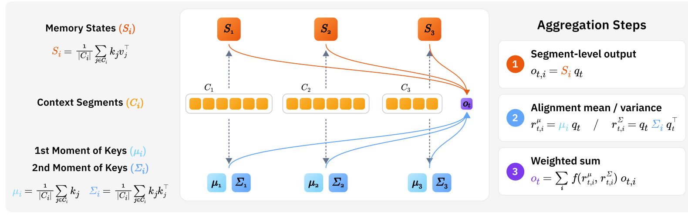
Figure 2 把内容存储和路由存储分开画出。中间的黄色 token 段向上更新内容状态，向下形成每段的均值向量和二阶矩；当前查询沿橙色路径从状态读出内容，沿蓝色路径读取统计量，最后在右侧汇合。图中三个步骤依次对应段输出、对齐统计和加权求和，输入输出关系是先取得每段可提供的表示，再估计它与当前查询的相关性，最后将表示融合。这种设计使二阶矩只承担路由，而没有尝试从二阶矩还原原始值序列。图内公式是概念化示意，与正文严格定义存在值得注意的简写：第二步的二次型对应对齐二阶原始矩，真正的方差还必须减去对齐均值的平方；内容状态的方向和归一化也应按骨干递推与正文公式实现，不能机械照抄示意图。训练阶段投影、温度和混合门在中训中共同学习；推理阶段仍需维护矩统计并为每个可见段计算路由分数，额外模块并不会在训练后消失。若部署方只复制右侧加权和而不保存下方统计，便无法得到该方法所需的内容意识。该图因此同时解释了方法为何能适配不同骨干，以及它为什么必然增加缓存和读出计算。
2.2 从对齐均值与方差推导聚合权重
有了统计缓存，模型无需回到原始 token，就能计算当前查询在每个段内的对齐分布：
符号解释：$r^\mu_{t,i}$ 是当前路由查询与第 $i$ 段所有路由键的平均内积，$r^\Sigma_{t,i}$ 是这些内积的方差，$q_t^{\prime\top}\Sigma_iq_t^\prime$ 则是内积平方的均值。减去均值平方之后，方差描述强弱对齐之间的差异，不是平均相关度本身。若所有键在查询方向上相似，方差接近零；若少量键明显突出，方差可以变大。但高方差不保证其中的高峰就是所需证据，最终仍需学习任务相关的使用方式。
符号解释：$\gamma_t$ 为从当前隐藏状态产生的标量门，$\tau_\mu$ 与 $\tau_\Sigma$ 为两条分支各自可学习的温度，$\operatorname{softmax}_i$ 表示在所有可见段之间归一化，$\lambda_{t,i}$ 是两种分布混合后的段权重。实现是两路分别归一化后再门控混合，并不是先把均值与方差线性相加，再做一次 softmax。分别归一化可让两类分数各自调节尺度，门则根据当前 token 决定二者的相对作用；温度控制路由集中程度，不能简单以某条分支原始数值更大来判断谁起主导作用。
该模块输出一组非负、归一化的段权重，与段读出向量相乘求和后送回骨干后续层。完整训练仍采用语言模型预训练目标，并通过中训让原来的单状态骨干适应分段与聚合；论文没有额外引入一个“正确段分类”损失。因而正确段权重改善是任务监督下形成的结果，不是使用答案位置直接训练一个路由标签。独立路由键查询也解释了后文共享表示消融为何重要：内容状态适合写入的信息，与判断某个段何时值得调用的信息，并不必然具有相同的最优特征。
2.3 与完整 softmax 注意力的联系
作者进一步给出理论动机，说明方差为何会出现在段相关性中。设完整注意力对每个键打分，再把同一段的注意力质量求和：
符号解释：$s_{t,i,j}$ 是查询与段内第 $j$ 个键的内积，$\delta$ 是理论分析中的温度，$Z_{t,i}$ 是段的长度归一化指数证据，$A_{t,i}$ 是完整 token 级 softmax 最终分配给该段的总质量。等长段下，$\log|C_i|$ 对所有段相同，因此在段间 softmax 中抵消；若改为不等长分段，该长度项就不能直接忽略。
符号解释：$m$ 为等长段的 token 数，$\eta_{t,i}$ 为对齐均值，$\sigma^2_{t,i}$ 为对齐方差，$O(\delta^3)$ 是三阶及更高阶余项。对数证据在温度零点附近的累积量展开首先出现均值，其次出现方差，说明只保留平均对齐会丢掉段证据的一个低阶组成部分。该展开依赖温度附近的局部分析，不能保证任意实际分数和温度下截断误差都很小。
符号解释：左侧是完整键集合定义出的标量统计，右侧是通过段内矩缓存恢复的路由分数。等式说明需要的信息可以从紧凑缓存精确计算，而不是说 MERLIN 的最终路由等于完整注意力。理论式在同一个 softmax 内以固定系数组合前两项，实际方法则使用两条独立 softmax、学习温度和门控；两者共享统计动机，却不是同一个函数。本文提供的是更有信息的可学习聚合机制，未证明它无损复制完整注意力或恢复压缩状态已经丢失的值信息。
3. 实验结果
3.1 模型、数据与复杂度口径
实验覆盖 Gated DeltaNet-1.3B 和 Mamba-2-780M 两个骨干。前者在 FineWeb-edu 上预训练五百亿 token，后者使用在 Pile 上预训练三千亿 token 的公开检查点。两者起初都是单状态模型，通过中训加入分段与聚合。默认上下文长度为一万六千三百八十四，段长二百五十六，因此最多形成六十四个段状态；路由维度默认一百二十八。正文描述第一阶段二十亿 token 的 Long-Data-Collections 数据，其中十分之一加入类似 RULER 的检索任务，第二阶段另用六千万 token，普通文本与合成 HotpotQA、SQuADQA 各占一半。附录超参数表把中训简记为二十亿 token、一万五千二百五十九步，未分别列清第二阶段预算，复现时应进一步核对，不能把简表当作总成本已完全闭合。
对照包括经过同类中训的单状态 Vanilla、多状态 Position 和多状态 Meanpool。RULER 评估八种检索与问答任务，默认每项五百样本；LongBench 选择十一项任务并过滤到至多一万六千 token，混合使用 F1、ROUGE 和分类准确率，因此其平均分不是一种统一业务指标。HELMET 则用于相关段位置的干预实验。训练样本含有与 RULER 同类的合成任务，这有助于学习检索能力，也要求谨慎解释“跨任务泛化”的范围。
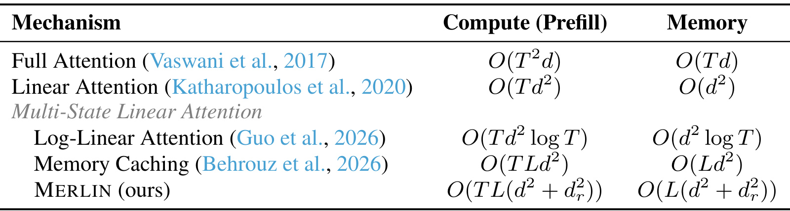
Table 1 中三列依次是机制、预填充计算复杂度和解码时保留的状态大小。完整注意力需要随长度增长的逐 token 缓存，普通线性注意力以一个固定矩阵换取容量限制，而多状态方法通过保留更多矩阵在二者之间折中。MERLIN 对每个段增加一个路由二阶矩，计算项为 $O(TL(d^2+d_r^2))$，缓存项为 $O(L(d^2+d_r^2))$，其中 $T$ 是序列长度，$L$ 是段数。与 Memory Caching 的差别是额外的路由统计，而非把所有成本降成严格的常数空间。默认固定段长时，段数会随上下文增加，因此不能只因名称包含线性注意力，就宣称完整系统对任意长度保持线性预填充。该表也没有提供实际 GPU 时间、内核利用率或通信开销；理论项较小不直接等于端到端更快。公平部署比较应同时规定上下文长度、段长、路由维度、骨干头数及数值精度，尤其要把内容状态本身已经增加的六十四段缓存计算进去。这个资源口径决定了后文“四倍内存”的含义：那是不同段长的质量比较，不是 MERLIN 相对原始单状态模型节约四倍显存。
3.2 长上下文检索与综合理解
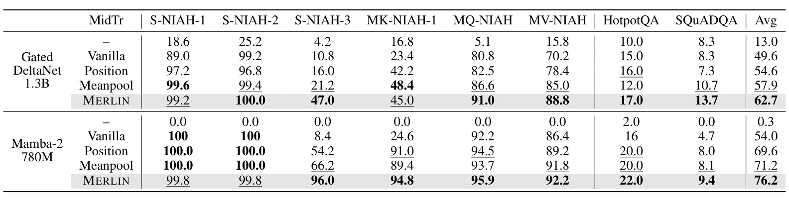
Table 2 的行按两个骨干分组，列包含单针、多键、多查询、多值检索以及两项问答，最后是八项任务平均。Gated DeltaNet 的 Meanpool 平均为 57.9，MERLIN 为 62.7，差值四点八，按表中四舍五入值计算约为相对百分之八点三；Mamba-2 从 71.2 到 76.2，差五点，约相对百分之七。这里的摘要百分数不能写成八点三或七个百分点。增益分布也很不均匀：Gated DeltaNet 的 S-NIAH-3 从 21.2 到 47.0，提升明显，而 MK-NIAH-1 从 48.4 降至 45.0，S-NIAH-1 从 99.6 略降至 99.2。Mamba-2 最明显的变化同样在 S-NIAH-3，从 66.2 到 96.0；前两项接近满分的单针任务反而由一百分变成 99.8。该结果支持二阶路由在部分困难检索设置上弥补均值遗漏，却不支持每项任务都更好。问答项仍然较低，例如 Gated DeltaNet 的 SQuADQA 为 13.7，说明找对段和正确完成答案生成之间还有距离。原始未中训模型成绩很低，但那一行只能说明架构适配与中训整体重要，路由本身的因果贡献应优先从相同中训的 Meanpool 和 Position 行比较。表内没有多随机种子误差条，点估计优势应与方差未知的边界一起保留。
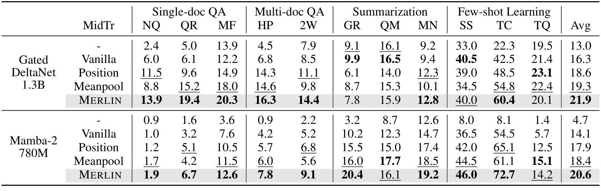
Table 3 按单文档问答、多文档问答、摘要和少样本学习分组，展示路由改进是否超出人工针检索。Gated DeltaNet 的平均分由 Meanpool 的 19.3 提高到 21.9，Mamba-2 由 18.4 提高到 20.6，对应原文报告的相对百分之十三点五和百分之十二。更细地看，Gated DeltaNet 在 NarrativeQA、Qasper、MultiFieldQA 和部分多跳问答上提高，但 GovReport 从 8.7 下降到 7.8，TriviaQA 从 22.4 下降到 20.1；Mamba-2 的 QMSum 从 17.7 降至 16.1，TriviaQA 从 15.1 降至 14.2。不同任务需要的段选择模式不同，突出少量强相关事实不保证摘要或少样本任务同时获益。最后一列是十一项标准任务得分的平均，混合了若干评测尺度，不能解释为真实系统准确率提升相同幅度。样本经过长度筛选，也未覆盖超出一万六千 token 的完整长文，因此该表证实的是特定长度范围内两个小型骨干的综合能力，而不是超长生产工作负载的性能保证。它比只看针检索更有说服力，因为问答、摘要和分类共同检验了表示的可用性；与此同时，若落地任务主要是会议摘要或开放问答，就应逐项选择与目标相近的列，而不能直接以总体平均决定替换方案。
3.3 正确段位置与分段长度
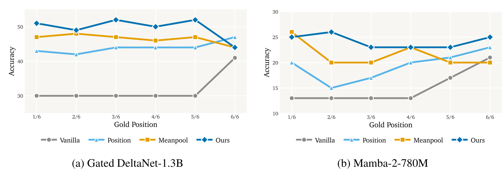
Figure 3 横轴把正确证据依次放在上下文的六个位置区间，纵轴是回答准确率，两个面板分别对应两个骨干。Vanilla 在大部分位置表现平坦而较低，到最后区间才明显升高，反映单状态记忆的近期偏好；MERLIN 在前中段明显更强，也没有在远离末尾时整体失效。这里比普通平均分更接近对问题机制的检验：同类任务中改变正确证据的位置，可以观察聚合是否只是依赖位置先验。不过，“更均匀”不等于严格位置不变。Gated DeltaNet 面板最后区间的 MERLIN 分数下降，并未继续领先所有对照；Mamba-2 的曲线也有起伏。因此，应把结果理解为减轻位置偏差，而不是彻底消除位置效应。图中的位置对照和均值对照都经过多状态适配，说明把缓存拆开本身已有帮助，二阶路由在此基础上进一步提高了多数位置的证据利用。附录四个随机案例也显示正确段的最终层权重更高，例如水循环案例从 Meanpool 的 0.030 到 0.055，但单层权重和答案正确性之间不是充分必要关系，不能把几个成功样本当作稳定可解释性的证明。部署到 RAG 时，这项诊断可以转化为很具体的验收：固定检索内容，移动真正证据的位置，检查答案质量是否仍然稳定，而不仅看平均问题集合的得分。
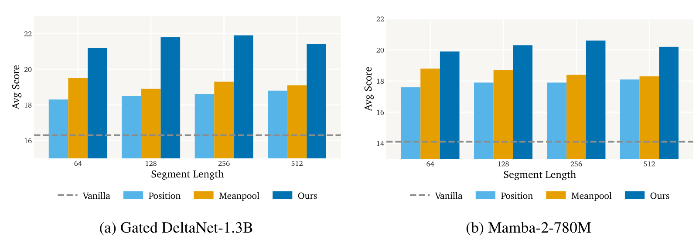
Figure 4 将段长设为六十四、一百二十八、二百五十六和五百一十二，纵轴为 LongBench 平均分。上下文固定时，段越短，状态越多，缓存越大；每种段长都需要对应训练设置，不能只在推理时任意改变一个值就假定得到相同曲线。两个骨干中 MERLIN 在每个段长都优于所画聚合基线，表明收益并不只出现在默认分段点。尤其默认二百五十六段长的 MERLIN 超过段长六十四的 Meanpool 或 Position，因此作者强调即使对照保留约四倍的段状态，新路由仍可取得更好的质量。但 MERLIN 自身额外保存矩统计，两种配置的准确内存比并非恰好四；“四倍”主要来自状态数量的比值，附录表可进一步量化差异。图中 Vanilla 是不分段的水平参考线，它不受段长影响，也不应该被用于推断多状态模型完全没有新增成本。这组实验支持的工程结论是：在一定质量目标下，可以考虑通过更精细路由减少所需段数，而非一味增加缓存容量。它没有证明默认 MERLIN 在同内存下最优，也没有给出同时约束时间与缓存的帕累托曲线；真实服务仍需测量每次读出遍历的状态数、矩阵运算成本和批量吞吐。
3.4 路由维度与共享参数消融
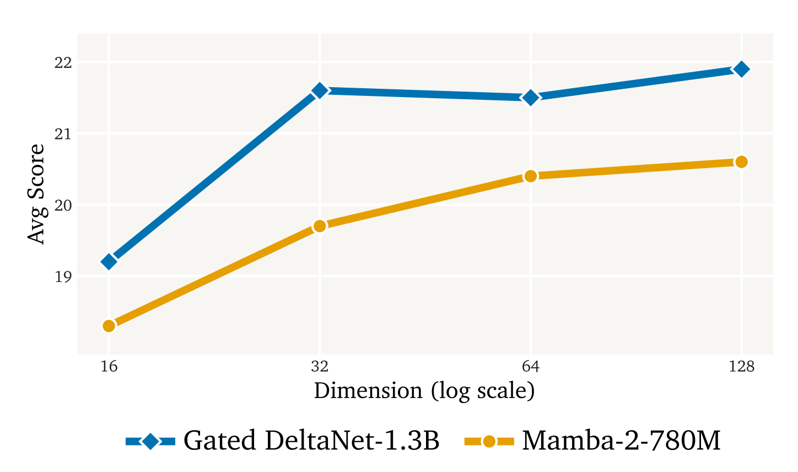
Figure 5 的横轴为路由维度，使用对数刻度，依次比较十六、三十二、六十四和一百二十八；纵轴为 LongBench 平均分。两条曲线说明过窄的统计空间会损失路由信息，而增加维度可以带来质量提升。不过收益具有饱和性，Gated DeltaNet 在三十二维附近已取得大部分增益，六十四维略有回落，一百二十八维再次上升；Mamba-2 在六十四维附近之后增幅较小。因而不能把维度越大越好当作无需验证的规则。二阶矩的存储按维度平方增长，从三十二扩大到一百二十八，会把这一部分矩阵元素数放大十六倍，尽管相对内容状态的总占比仍可能较小。该图值得与缓存表一起看：默认一百二十八维用于主实验，不代表每个部署预算下都应使用默认值。对小模型的局部曲线也不能保证更大骨干、不同头数或量化精度下有同样拐点。它提供了一个可以复现的调参依据，即先用较窄路由观察是否已接近质量平台，再决定是否为最后一点分数付出更多缓存和矩阵计算；这比只报告默认配置的平均增益更能帮助评估落地价值。图中没有误差条，局部小幅波动也应保留种子变化尚未量化的解释空间。
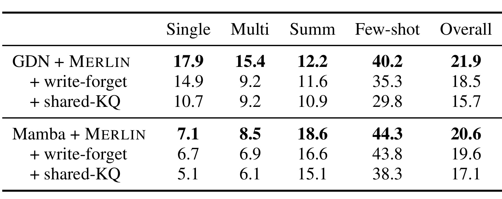
Table 4 的两组行分别是 Gated DeltaNet 和 Mamba-2，列按问答、摘要、少样本任务汇总。完整 MERLIN 的平均为 21.9 和 20.6，将内容状态与矩统计共用键查询后降为 15.7 和 17.1，在统计量上加入类似内容状态的写入遗忘门后降为 18.5 和 19.6。该结果说明内容写入表示与路由统计表示分离有实际价值，也说明对原始矩照搬骨干的遗忘规则未必合适。均值与方差需要描述一个段中的键分布，如果强烈选择性写入或遗忘改变了分布，统计含义可能偏离原本的路由目标；但这是结合结构的解释，实验本身只展示两种替代设计在这些设置下更差，没有直接证明下降完全由某一种原因造成。共享键查询也改变了参数化、维度和可优化空间，不能把下降全部归因于语义冲突。细分列还显示影响不均匀，例如 Gated DeltaNet 的多文档问答由 15.4 降至两种消融共同的 9.2，提示复杂证据组合可能特别依赖独立路由。但表中结果仍限于同一训练配方，未搜索让替代设计恢复性能的超参数，所以结论应是默认 MERLIN 的选择得到支持，而非所有共享或遗忘设计都必然无效。它也提醒实现者，省掉独立投影虽然能节省部分权重，可能同时丢掉论文主要质量收益。
3.5 缓存开销与参数代价
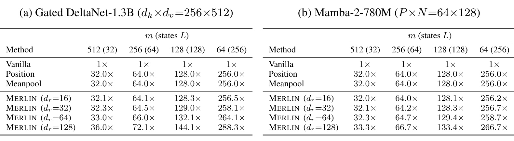
Table 9 给出的分母是各骨干的单状态 Vanilla 解码缓存，不是完整模型显存，更不是包含权重、激活和运行时临时区的总显存。默认段长二百五十六时有六十四个状态，Position 和 Meanpool 都约为单状态的六十四倍；一百二十八维 MERLIN 在 Gated DeltaNet 上为 72.1 倍，在 Mamba-2 上为 66.7 倍。相对同段数基线，额外开销约为百分之十二点六和百分之四点二，而相对单状态显然增加很多，二者必须同时说明。Mamba-2 按组共享矩统计，因此额外占比较小；这种骨干相关性不能忽略。缩小路由维度后，矩阵项迅速降低，例如三十二维默认段长下分别约 64.5 倍和 64.2 倍，更接近原有多状态缓存。表内所有方法在段长缩短时都增加缓存，说明内容状态数量仍是主要资源因素。结合 Figure 4，方法可在少状态配置下达到更多状态基线的质量，但这属于质量与缓存交换，并未保证实际吞吐也同步改善。要估算部署预算，应先确定状态保存精度和共享方式，再乘层数、头数、并发请求数；直接把该表中的倍数乘完整模型权重，会得到错误的显存预测。对于已经使用压缩记忆的服务，这张表比摘要中的“超过四倍内存基线”更能说明实际要承担的增量。
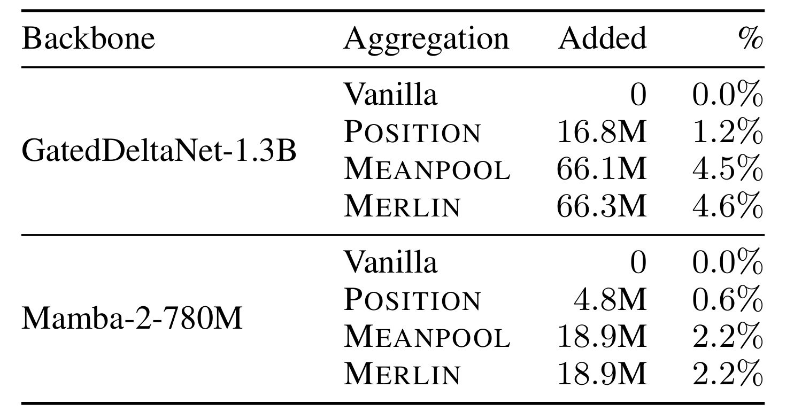
Table 10 以原始骨干权重为基准，列出聚合模块新增的参数量和百分比。Gated DeltaNet 中 Position 增加 16.8M，Meanpool 为 66.1M，MERLIN 为 66.3M；对应原文比例约百分之一点二、四点五和四点六。Mamba-2 中 Meanpool 与 MERLIN 都增加 18.9M，约百分之二点二。二阶矩本身是由当前上下文产生的缓存，不是每个矩阵元素都成为独立可训练参数，因此它可以显著增加运行时缓存，却只比均值路由增加很少的权重。这正是区分参数、缓存和算力三种资源的必要性：权重增量接近，并不意味着推理内存与计算完全相同。Position 权重更少，但在主结果中质量也较弱，不能只凭参数量认定它更划算。原文不同段落对 Gated DeltaNet 的近似比例存在四点五与四点六的取舍，表中将 Meanpool 与 MERLIN分别列为四点五和四点六，本笔记按表保留差异。该表没有给 wall-clock 延迟、每 token 吞吐或批量服务表现；即使新增权重只有很小比例，读取每个段的二阶矩也可能改变带宽访问和内核效率。复现时应把这些指标单独测量，不能用“参数开销相近”替代实际系统成本报告。
4. 总结
MERLIN 最有价值的地方，是把多状态记忆中的“内容压缩”与“何时读取”区分开来。更多状态可以缓解容量不足，但如果聚合只看位置或平均键，仍会浪费已经保存的内容。本文用可查询的一阶和二阶统计丰富段级索引，在两个骨干、若干检索与理解基准上获得较一致的平均收益。其方法规模不大，变量和信息流也较明确，因此适合作为研究多状态线性注意力的一个路由基线。更值得记住的是统计视角：平均相关度与相关度的分布形状提供不同信息，二者并不应当自动合并成一个均值表示。
对于 RAG，具体可借鉴的是把检索段的相关性判断从单个平均向量扩展到方向性统计，并用证据位置干预测试检查是否过度偏向近期内容。对于长期用户建模，可探索对分时段行为键维护类似统计，避免少数关键兴趣被大量日常行为平均稀释。不过这只是迁移设想；推荐任务的键可能同时受曝光、流行度和反馈选择影响，高方差也可能放大噪声。应先验证路由权重是否对应有用的历史证据，再讨论业务指标，而不是把语言基准的相对分数直接转换成预期线上收益。
局限至少有五点。第一，实验只覆盖两个不到两十亿参数的骨干和至多一万六千上下文，更大模型、更长输入以及多模态情况均未验证。第二，中训含有 RULER 风格合成检索与问答数据，结果不能被描述为完全未经任务相关训练的泛化。第三，固定等长分段是理论抵消长度项与实验比较的共同前提，动态段长需要重新处理长度偏置。第四，主结果缺少多种子分布和端到端时间成本，较小的子任务差异及真实系统性价比仍有不确定性。第五，未核验本文独立代码，部分图示简写、当前部分段归一化和两阶段训练预算需要与作者实现进一步对照。
后续跟进应分三步。首先复现同中训条件的 Meanpool 与 MERLIN，并保留各任务结果及负向项，检查收益是否仍主要来自少数困难检索类型；这能避免平均数掩盖目标任务退化。其次联合扫描段长和路由维度，在相同缓存或相同延迟预算下比较，而不只在固定段长上加一个模块；这样才能判断额外二阶矩是否比增加内容状态更划算。最后记录每层缓存、预填充时间、解码吞吐及不同并发下的峰值显存，并检查 bf16 或更低精度下方差计算的数值稳定性。均值平方相减可能带来舍入误差，尤其当真实方差很小时，工程实现需要明确处理策略，这一风险不能仅靠理论恒等式消除。
阅读结论应保持在证据范围内：本文支持“均值之外的二阶信息有助于压缩记忆路由”，并展示了实际可学习的实现方式；它没有证明压缩记忆可无损替代全部 token 缓存，也没有给出普适的速度优势。对准备使用线性或状态空间骨干的工程团队，最实际的下一步是以本文为起点测清质量、段状态缓存和路由计算三者的交换关系，再决定是否进入具体服务。
本文所有数值均为作者原文报告，本轮未重新训练骨干或运行评测；对未公开实现中的精度、缓存布局和内核细节不作额外性能承诺。